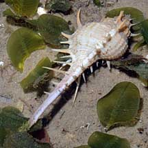
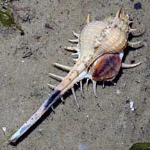
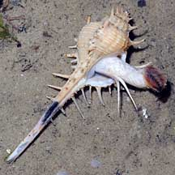
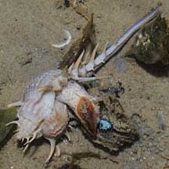
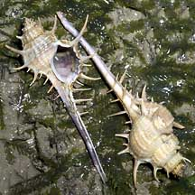
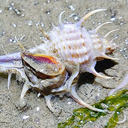

|
|
| shelled snails text index | photo index |
| Phylum Mollusca > Class Gastropoda > Family Muricidae |
| Rare-spined
murex Murex trapa Family Muricidae updated Aug 2020 Where seen? It is rare to come across the living snail but the shells of dead snails are often encountered on our Northern shores. The empty shell is usually occupied by a hermit crab! Features: 6-7cm long, it has slender, curving spines and a long siphonal canal. It has 3-4 short spines on half the siphonal canal closest to the shell. This long siphonal canal helps the animal protect its siphon while it pokes into places to look for food. While the spines may help protect it from predators, it does make it difficult for the animal to move about among seagrasses and seaweeds. So the animal usually moves by holding the shell high above the bottom as it moves across the surface. |
 Changi, Aug 08 |
 |
 Long tentacles and muscular foot. |
| What does it eat? Like other drills (Family Muricidae) the Rare-spined murex snail can drill through the shells of clams and snails. |
|
 This one was clasping a bivalve. Changi, Aug 08 |
 Empty shells are commonly seen. Changi, Aug 05 |
| Human uses: It is sometimes collected
as food by coastal dwellers (e.g., in Malaysia) and for its shell
for the shell trade. Status and threats: This snail is listed as 'Vulnerable' on the Red List of threatened animals of Singapore. It is now seldom seen. Like other creatures of the intertidal zone, they are affected by human activities such as reclamation and pollution. Trampling by careless visitors and over-collection can also have an impact on local populations. |
| Rare-spined murex on Singapore shores |
On wildsingapore
flickr
|
| Other sightings on Singapore shores |
 |
|
Links
References
|